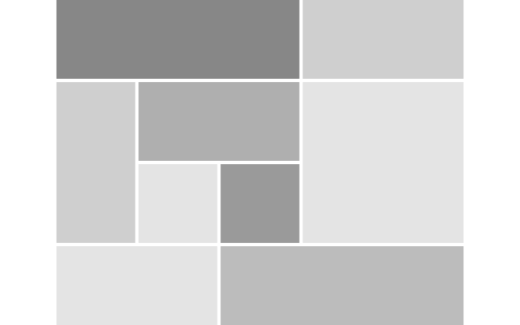

blocks
blocks
Typed screens, drawn the same on the web, in SwiftUI and as a static page.

27core kinds
3renderers: web, SwiftUI, static
13.7KBof script, gzipped
0lines of hand-written HTML here
One shape for a screen
An app builds a Screen from typed blocks: rows, stats, forms, prose. A server sends it once, then only what changed. Each renderer draws the same tree, and every block carries a fallback, so a renderer that lacks a kind still shows something true.
With JS off, a page is plain HTML: every link works and every word reads. With blocks.js, the page is adopted where it stands, with no redraw.
This page, in Rust
Screen::new("home")
.push(Nav::site(&links))
.push(Hero::new("blocks")
.subtitle("Typed screens, drawn the same…")
.action(Act::url("see the kinds", "gallery/")))
.push(Stat::tiles(facts))Look around
Galleryevery core kind, drawn from its sample; the ones with no HTML view show their fallback27 kindsSchemesthe default pair, light and dark, and a scheme this site brings itself3Numbersfirst paint, update cost and script size, against the budgets CI holdsBehaviourschecks, show and enabled rules that run in the page, nothing sentIslandsan app's own component in a screen, its props in and its events out